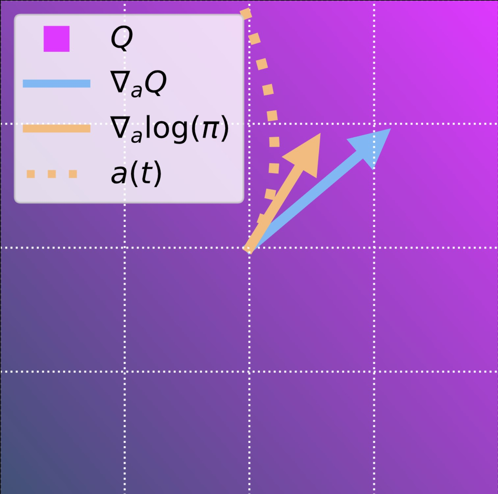

Learning diffusion model policies for off-policy reinforcement learning.

Abstract
Diffusion models have become a popular choice for representing actor policies in behavior cloning and offline reinforcement learning. This is due to their natural ability to optimize an expressive class of distributions over a continuous space. However, previous works fail to exploit the score-based structure of diffusion models, and instead utilize a simple behavior cloning term to train the actor, limiting their ability in the actor-critic setting. In this paper, we present a theoretical framework linking the structure of diffusion model policies to a learned Q-function, by linking the structure between the score of the policy to the action gradient of the Q-function. We focus on off-policy reinforcement learning and propose a new policy update method from this theory, which we denote Q score matching. Notably, this algorithm only needs to differentiate through the denoising model rather than the entire diffusion model evaluation, and converged policies through Q-score matching are implicitly multi-modal and explorative in continuous domains. We conduct experiments in simulated environments to demonstrate the viability of our proposed method and compare to popular baselines.
Acknowledgements
Michael Psenka acknowledges support from ONR grant N00014-22-1-2102. Alejandro Escontrela acknowledges support from an NSF Fellowship, NSF NRI #2024675. Yi Ma acknowledges support from ONR grant N00014-22-1-2102 and the joint Simons Foundation-NSF DMS grant #2031899. This work was partially supported by NSF 1704458, the Northrop Grumman Mission Systems Research in Applications for Learning Machines (REALM) initiative, NIH NIA 1R01AG067396, and ARO MURI W911NF-17-1-0304.
Citation
@inproceedings{psenka2024qsm,
title={Learning a Diffusion Model Policy from Rewards via Q-Score Matching},
author={Psenka, Michael and Escontrela, Alejandro and Abbeel, Pieter and Ma, Yi},
booktitle={Proceedings of the 41st International Conference on Machine Learning},
year={2024}
}